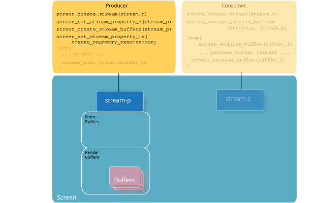
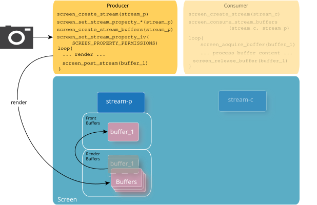
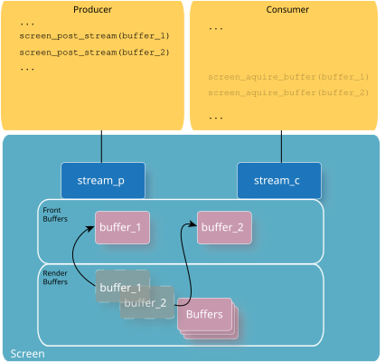
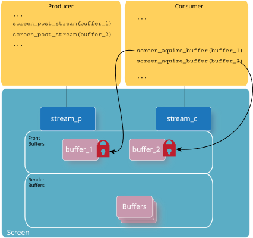
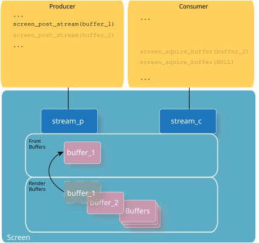
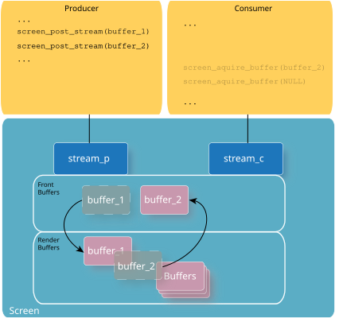
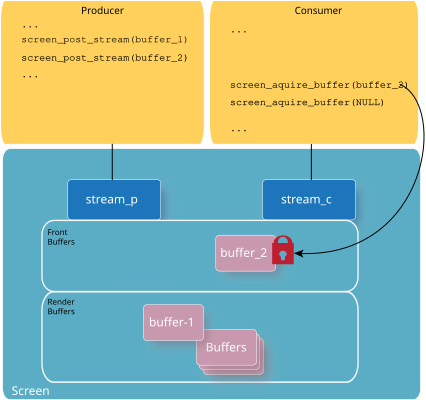

The producer creates content and shares it with permitted consumers.
As the producer, you must set up the stream accordingly for consumption. Generally, you need to perform the following steps in your producer application to share the content you produce:
Call screen_create_stream() to create a stream for the producer to render into. For example:
...
screen_context_t screen_pctx;
screen_create_context(&screen_pctx, SCREEN_APPLICATION_CONTEXT);
...
/* Create the producer's stream */
screen_stream_t stream_p;
screen_create_stream(&stream_p, screen_pctx);
...
Call the appropriate screen_set_stream_property_*() functions to set properties of the producer's stream. You should set, at the minimum, the following properties:
SCREEN_PROPERTY_USAGE must reflect the needs of the producer. That is, if the producer intends to render to the stream using Khronos rendering APIs, then the usage flag must reflect this rendering choice. For example:
...
int buffer_size[2] = {720, 720};
screen_set_stream_property_iv(stream_p, SCREEN_PROPERTY_BUFFER_SIZE, buffer_size);
screen_set_stream_property_iv(stream_p, SCREEN_PROPERTY_FORMAT,
(const int[]){ SCREEN_FORMAT_RGBX8888 });
screen_set_stream_property_iv(stream_p, SCREEN_PROPERTY_USAGE,
(const int[]){ SCREEN_USAGE_OPENGL_ES2 | \
SCREEN_USAGE_OPENGL_ES3 | \
SCREEN_USAGE_WRITE | \
SCREEN_USAGE_NATIVE });
Call screen_create_stream_buffers() to create buffers for the stream. In the example below, the producer is double-buffered, and so we pass in 2 for the numbers of buffers to create:
...
screen_create_stream_buffers(stream_p, 2);
...
A producer can have multiple consumers. So, you need to consider what permissions are appropriate to account for all your expected consumers. It's important to set the permissions correctly. If the consumers don't have the right permissions to your producer's stream, they won't be notified with the respective events and won't have access to the producer's stream. Similarly, if your permissions aren't set correctly, the producer may be inadvertently providing access to consumers that shouldn't have access. See the Permissions and Privileges chapter for more details on how to set permissions.
Set the SCREEN_PROPERTY_PERMISSIONS property on the producer's stream to grant permissions. For example:
...
int permissions;
screen_get_stream_property_iv(stream_p, SCREEN_PROPERTY_PERMISSIONS, &permissions);
/* Allow processes in the same group to access the stream */
permissions |= SCREEN_PERMISSION_IRGRP;
screen_set_stream_property_iv(stream_p, SCREEN_PROPERTY_PERMISSIONS, &permissions);
...

When the producer grants access, the consumer receives a SCREEN_EVENT_CREATE event. This event provides the consumer with the handle to the producer's stream. The consumer uses this handle to connect to the producer's stream.
If the producer changes the permissions to deny access on a stream that's already connected with a consumer stream, the consumer receives a SCREEN_EVENT_CLOSE event. The producer can undo the connection between its stream and a consumer stream by changing the SCREEN_PROPERTY_PERMISSIONS property to deny that consumer access.
The producer application renders to its stream. You can refer the Rendering chapter for details on rendering to render targets. After the producer is ready to make the content ready to consumers, it must call screen_post_stream().

Once the producer posts the stream, the consumer is able to acquire and share its content. The producer may be blocked while the consumer is accessing the shared stream buffers. When there are multiple consumers, all consumers that are acquiring buffers receive the same front buffer of the producer's stream. When there are no more available render buffers, the producer is blocked until the last consumer that's accessing the buffer releases it. For example, if the producer's stream is single-buffered, and two consumers have acquired the buffer, the producer is blocked until both consumers have called screen_release_buffer().
The mode of the stream determines how Screen makes front buffers available. The producer sets the mode by calling screen_set_stream_property_iv() with the SCREEN_PROPERTY_MODE property. Valid modes are:
In this mode, there's no limit to the number of front buffers (other than the number of total buffers available in the stream). The producer can make multiple calls to screen_post_stream() as long there is an available buffer, and the same buffer isn't posted more than once. For example, the following illustrates a producer posting two buffers:

When the consumer calls screen_acquire_buffer(), twice (once for each buffer to acquire), each of the two front buffers is secured for access by consumer. If the producer has more than two render buffers available, it can continue posting those buffers while the consumer has acquired the first two.

If the consumer isn't keeping up with acquiring and releasing the buffers, the front buffers will pile up and the producer eventually runs out of buffers. The producer's rate to produce content is limited by the consumer's ability to process and release the buffers.
Use this mode when the producer is rendering at a variable rate. This is typical of most types of rendering.
In this mode, there's only one front buffer. The producer can make multiple calls to screen_post_stream() for consumers to acquire, but the consumers can acquire only the last buffer posted. For example, the following illustrates what happens when a producer posts the first time:

When the producer posts a second time, and before the consumer has acquired the front buffer, the second post replaces the front buffer.

Now, when the consumer acquires a buffer, it will secure the front buffer that's available—which is the buffer from the producer's second post. When the consumer calls screen_acquire_buffer() a second time, it doesn't get a buffer because it has already acquired the one front buffer.

Consumers only ever have one buffer to acquire and process at a time.
Use this mode when the timing of the input is controlled by the producer. Examples are video or camera applications, where the input is coming in at a fixed rate. In these types of producer applications, the producer is unlikely to produce more frames than the consumer can acquire and process (e.g. 30fps).